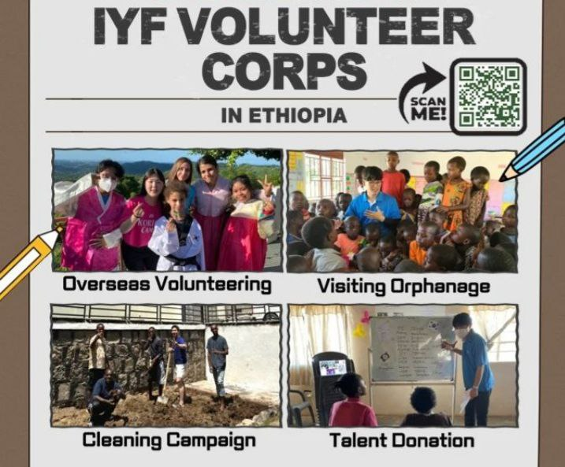

Hobby
I enjoy watching Korean movies and dancing to Korean music.
Since high school, I have attended the Korean Cultural Festival numerous times.
I am fluent in the Korean language, able to read and write Hangul proficiently.


Hiking is one of my favorite activities to do on the weekends. The mesmerizing beauty of the mountains surrounding Addis relaxes me and brings me a sense of peace. It is an experience that always makes me feel rejuvenated. Since I live in Naro Ajamba, the mountain is nearby, and we have a clear view of it even from our home. It adds beauty to the area.
I believe that as long as someone is alive and well, they should also have the ability to support others.One volunteer activity I am particularly passionate about is blood donation. Since turning sixteen, I have donated blood five times.